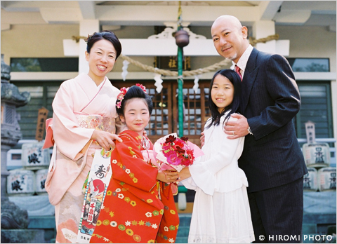
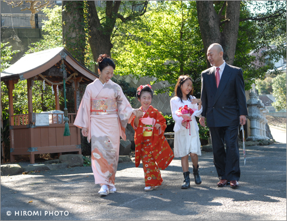
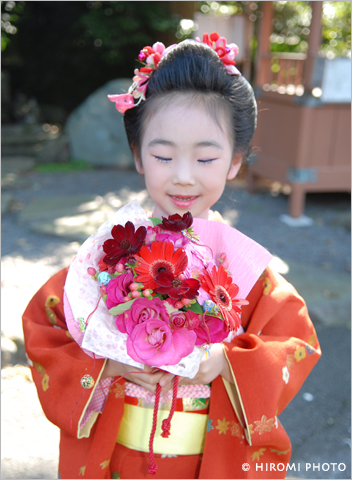

まゆなちゃんの七五三
皆さん、お久しぶりです。お変わりなくお過ごしでいらっしゃいますか？昨日あたりから急に寒さを感じるようになってきましたね。
私はおかげさまで元気にしています。このところ、撮影や編集、打ち合わせと忙しくさせて頂いておりましたが、また徐々にブログにもアップしていきたいと
思っています。まずは、今月頭に撮影させていただいた七五三の画像から♪

まゆなちゃんの七五三

これからお参り♪

「うれしいな♪」
まゆなちゃんのご家族とは、お姉ちゃんが3歳の七五三の時に初めて撮影させて頂いて以来、今回が3回目になりましたので、気持ちばかりですがブーケ をプレゼントさせていただきました。こちらは、湯河原の花茂さんというお花屋さんで、七五三の撮影に使用したい事や着物の色を伝えアレンジしてもらった物 です。
リボンではなく紐で縛ってあるところや、お花に和風の小さな鞠のような玉が絡んでいるところがとてもかわいらしく、プロの仕事だなぁと感激しまし
た。
まゆなちゃんも気に入ってくれたようで良かったです♪
このたびはおめでとうございました。
Category: 家族＆こどもの出張撮影 » “まゆなちゃんの七五三” 2008/11/10